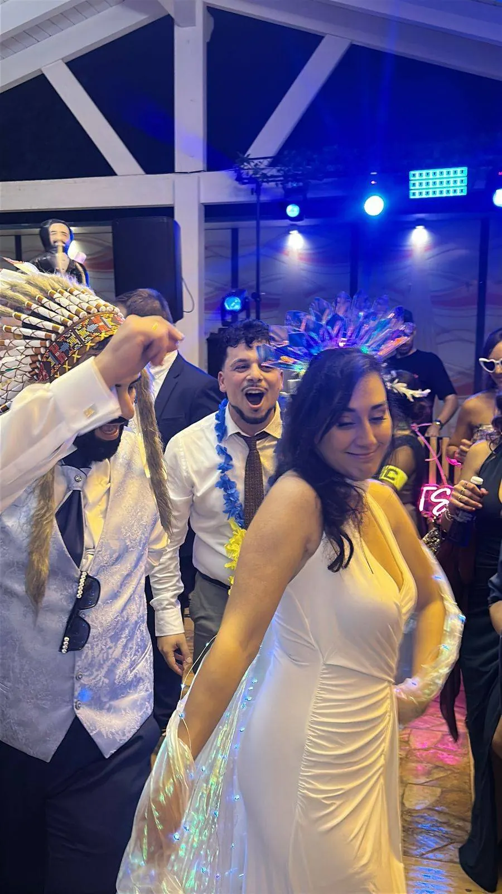

Barra libre
Desde 1.500 €
Cinco horas de fiesta sin bajones, con luces de discoteca, coordinadora y Hora Loca.
Reservar con Barra libreDJ y discomóvil en Tomelloso para bodas y celebraciones. Bodas en Tomelloso, Argamasilla de Alba, Socuéllamos, Pedro Muñoz, Campo de Criptana, Alcázar de San Juan y La Solana. La comarca donde más fiestas hemos hecho y donde mejor conocemos las fincas: Salones Epílogo, Moments by Casa Justo, Salones Mabel y Jardines López Linares.
Solo una boda al día · Respuesta en menos de 24 h

Municipios a menos de 40 km de Tomelloso, en Ciudad Real, Toledo, Cuenca y Albacete.
Salimos desde Tomelloso, así que aquí es donde más rápido llegamos. Primero nos reunimos con vosotros para preparar la banda sonora y el orden de la celebración. El día de la boda llegamos con margen, montamos sonido e iluminación y coordinamos los detalles con la finca. Durante la fiesta, Pedroja DJ pincha en directo y nuestra coordinadora se encarga de la entrada, la tarta, los ramos y la Hora Loca.
Tenéis todo el detalle en DJ para bodas y fotos y vídeos reales en la galería. Si ya tenéis fecha, comprobad si está libre.
Desde 1.500 €
Cinco horas de fiesta sin bajones, con luces de discoteca, coordinadora y Hora Loca.
Reservar con Barra libreDesde 2.000 €
Todo el día con un solo equipo: ceremonia, cóctel, banquete y barra libre, con micrófonos y coordinadora.
Reservar con Boda completaPara parejas que quieren todo perfecto, sin coordinar a varios proveedores
Reseñas reales de parejas que se casaron con nosotros. Copiadas tal cual de Bodas.net.
Una experiencia de 10! Contar con vosotros para nuestra boda fue todo un acierto. Desde el primer momento fuisteis súper profesionales, atentos y cercanos, y supisteis captar perfectamente el ambiente que queríamos para nuestro día. La música estuvo genial, animasteis muchísimo la fiesta y conseguisteis que todo el mundo, desde los más jóvenes hasta los más mayores, disfrutara y no parara de bailar. Sin duda, fuisteis una parte fundamental para que nuestra boda fuera tan especial e inolvidable. ¡Muchísimas gracias por hacer que la fiesta fuera espectacular! Los recomiendo al 100 %.
No podemos estar más contentos con el trabajo del DJ y su acompañante en nuestra boda. Desde el primer momento demostraron una profesionalidad increíble, estuvieron pendientes de todo y consiguieron que la fiesta estuviera animada de principio a fin, ¡sin que decayera en ningún momento! La música fue espectacular, supieron crear el ambiente perfecto en cada momento y la iluminación, el juego de luces y todos los detalles hicieron que la fiesta fuera simplemente fenomenal. Además, estuvieron haciendo un montón de fotos y capturando momentos que nos llevamos de recuerdo. También queremos destacar que durante la ceremonia todo sonó perfecto, cuidando cada detalle para que todo saliera genial. Se nota cuando hay profesionales que disfrutan con su trabajo y se implican de verdad para que un día tan especial salga perfecto. ¡Gracias a los dos por formar parte de nuestra boda y ayudarnos a vivir una fiesta inolvidable! Os recomendamos al 100 %. ¡Sois unos cracks!
Desde el primer momento, Pedro fue muy profesional y supo adaptarse perfectamente a nuestros gustos y al ritmo de la celebración. Estuvo atento a cada detalle, tanto a los momentos más importantes como a la energía de la fiesta. No tuvo ningún problema en atender peticiones y supo manejar los tiempos de la boda de forma excelente, haciendo que todo fluyera de manera natural. Estamos muy contentos con su trabajo y sin duda lo recomendamos. Fue una parte clave para que nuestro día fuera todavía más especial.
Sí. Tomelloso y su comarca son el centro de nuestra zona de trabajo y donde más rápido llegamos.
Entre otros: Argamasilla de Alba, Socuéllamos, Pedro Muñoz, Campo de Criptana, Alcázar de San Juan, La Solana, Ossa de Montiel, Manzanares, Membrilla, Villarta de San Juan, Herencia, Villarrobledo, Mota del Cuervo.
Chispas de fuego frío, pistola de humo, confeti y atrezzo premium con gafas, pelucas, plumas y disfraces.
Una sola. Bloqueamos vuestra fecha en exclusiva.
Bloquead vuestra fecha antes de que quede ocupada. Respondemos en menos de 24 horas.
Teléfono651 306 185 WhatsAppEscríbenos ahora Emailhola@doblebeatshow.es Instagram@doblebeatshowHorario de atención: lunes a viernes, de 10:00 a 14:00 y de 16:00 a 20:00.
“Llevamos más de una década haciendo que la gente no quiera irse a casa.”